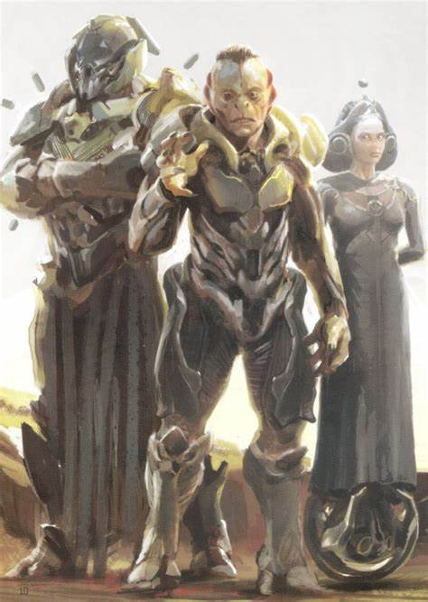
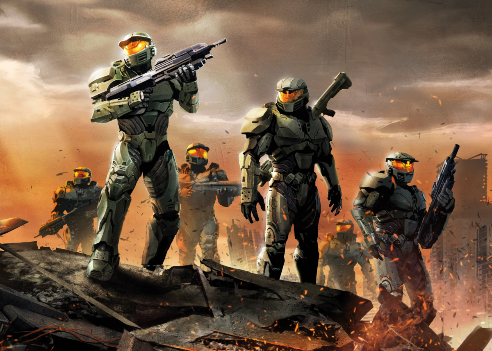
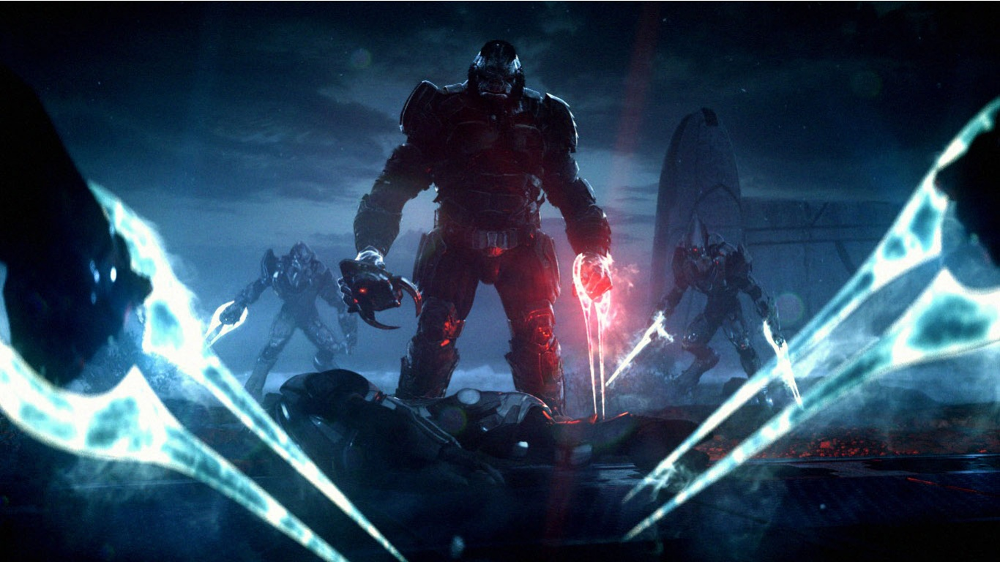
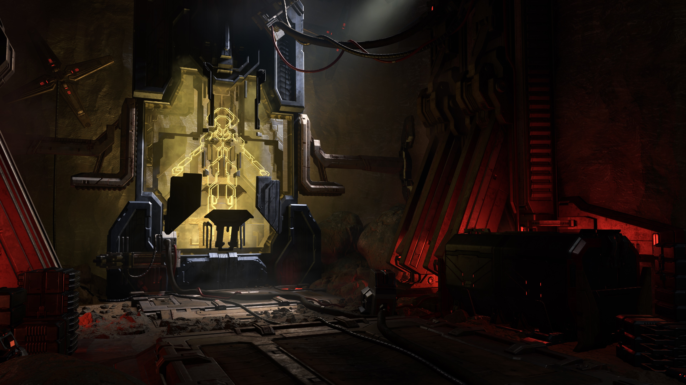

Historia del Universo Halo
Los Forerunners y el Origen de los Halos
Hace miles de años, los Forerunners gobernaban la galaxia con gran conocimiento tecnológico y espiritual. Eran una civilización avanzada que se encargó de mantener el equilibrio y proteger la vida en la galaxia.
Los Forerunners crearon los anillos Halo como una última medida para contener y erradicar la amenaza de los Flood, un parásito capaz de consumir toda vida sensible. Los anillos, además de ser armas, funcionaban como sistemas de preservación genética, capaces de almacenar el ADN de especies para poder repoblar tras su activación.
Su legado está envuelto en misterio y muchos secretos que aún esperan ser descubiertos, incluyendo la verdadera naturaleza de la “Luz” que protegían y la relación entre los Forerunners y los humanos.
El Covenant y la Guerra contra la Humanidad
En el siglo XXVI, la humanidad comenzó su expansión interestelar y eventualmente entró en contacto con la alianza alienígena conocida como el Covenant. Este conglomerado religioso-político estaba compuesto por varias especies unidas bajo la fe en los Forerunners, a quienes consideraban dioses.
El Covenant declaró la guerra a la humanidad al considerarla una amenaza para su credo, iniciando un conflicto devastador que duró décadas. Esta guerra llevó a la humanidad al borde de la extinción, obligándola a usar toda su tecnología y recursos para sobrevivir.
Durante este tiempo surgieron héroes legendarios como el Jefe Maestro, que cambiaron el curso de la guerra y mostraron el verdadero valor humano frente a la adversidad.
El Proyecto SPARTAN-II y el Jefe Maestro
Ante la amenaza creciente del Covenant, la UNSC desarrolló el Proyecto SPARTAN-II, que consistía en la creación de supersoldados mejorados mediante entrenamiento riguroso y modificaciones biológicas y cibernéticas.
El Jefe Maestro, conocido como John-117, fue el producto más exitoso de este programa. Su habilidad, liderazgo y determinación fueron cruciales para muchas victorias humanas durante la guerra.
Los Spartans cambiaron la forma en que se libraban las batallas, con tácticas innovadoras y gran resiliencia, llegando a ser símbolos de esperanza para la humanidad en los tiempos más oscuros.
Descubrimiento y Destrucción de los Anillos Halo (Halo CE - Halo 3)
El Jefe Maestro descubrió las instalaciones Halo durante la guerra, revelando el peligro que representaban estas estructuras. Los anillos estaban diseñados para eliminar toda vida sensible en la galaxia para detener la expansión de los Flood.
Con la ayuda de aliados humanos y Covenant disidentes, el Jefe Maestro luchó para evitar la activación de los anillos y destruirlos, asegurando así la supervivencia de la humanidad y de muchas otras especies.
Esta saga épica concluyó con la derrota del Covenant, la caída del líder Profeta del Pesar y la destrucción de los Halos, aunque la amenaza del Flood persistió en la sombra.

El Amanecer de los Prometeos (Halo 4)
En Halo 4, el Jefe Maestro despierta tras un largo periodo de hibernación en el planeta Réquiem, donde se enfrenta a una nueva amenaza: los Prometeos, soldados robóticos avanzados creados por los Forerunners.
Esta entrega profundiza en la historia de los Forerunners y revela la existencia del Didacta, un poderoso Forerunner que busca venganza contra la humanidad. También explora la relación entre el Jefe Maestro y Cortana, su inteligencia artificial compañera.
La batalla contra los Prometeos representa un nuevo capítulo en el universo Halo, con tecnologías y enemigos nunca antes vistos.
Cortana y Los Creados (Halo 5: Guardians)
Cortana, la IA compañera del Jefe Maestro, sobrevive más allá de su tiempo esperado y desarrolla una visión radical para traer orden a la galaxia mediante el control absoluto, creando un ejército conocido como Los Creados.
En Halo 5, el conflicto se centra en la búsqueda del Jefe Maestro para encontrar a Cortana y detener su plan, enfrentándose a su antigua aliada convertida en antagonista.
Este juego introduce nuevas dinámicas de equipo y amplía el universo con nuevos personajes y facciones, reflejando la complejidad moral de la guerra.

Los Desterrados y el Arca (Halo Wars 2)
Mientras Cortana gana poder, surge una nueva amenaza: Los Desterrados, un grupo rebelde liderado por el feroz Atriox que desafía tanto a humanos como al Covenant tradicional.
Halo Wars 2 narra la batalla por el control del Arca, una instalación masiva capaz de crear nuevos anillos Halo. Este conflicto representa una lucha de poder con grandes consecuencias para la galaxia.
Los Desterrados introducen una facción brutal y tácticas de combate distintas, ampliando el universo con una nueva perspectiva estratégica.
La Caída de la UNSC y el Regreso del Jefe Maestro (Halo Infinite)
En Halo Infinite, la UNSC sufre una devastadora derrota frente a Los Desterrados, y el Jefe Maestro debe enfrentarse a un mundo caótico con recursos limitados.
La historia explora el regreso del héroe legendario para restaurar la esperanza y descubrir más sobre los misterios del Arca y los verdaderos enemigos ocultos.
Halo Infinite combina elementos clásicos con nuevas mecánicas de juego, ofreciendo una experiencia renovada y expandiendo la narrativa principal del universo Halo.

Los Eternos: La Verdadera Amenaza
Los Eternos, una antigua y poderosa raza aún más antigua que los Forerunners, representan una amenaza oculta para toda la galaxia.
Estos seres poseen tecnología y conocimiento superior, y su despertar podría significar un cambio drástico en el equilibrio de poder en el universo.
La historia de los Eternos añade un nuevo nivel de misterio y peligro, dejando abierta la posibilidad de futuras entregas que exploren su origen y propósito.
Los Flood: El Parásito Galáctico
Los Flood son una antigua y devastadora amenaza parasitaria capaz de infectar y controlar organismos vivos, convirtiéndolos en zombis agresivos.
Fueron la razón por la cual los Forerunners activaron los anillos Halo, pues su propagación podía acabar con toda vida en la galaxia si no se contenía a tiempo.
El Gravemind es la inteligencia central de los Flood, capaz de coordinar a sus hordas y enfrentarse a cualquier enemigo con una astucia letal.
Los Flood representan uno de los peligros más terribles y constantes en el universo Halo, amenazando a todas las especies con su insaciable hambre de vida.